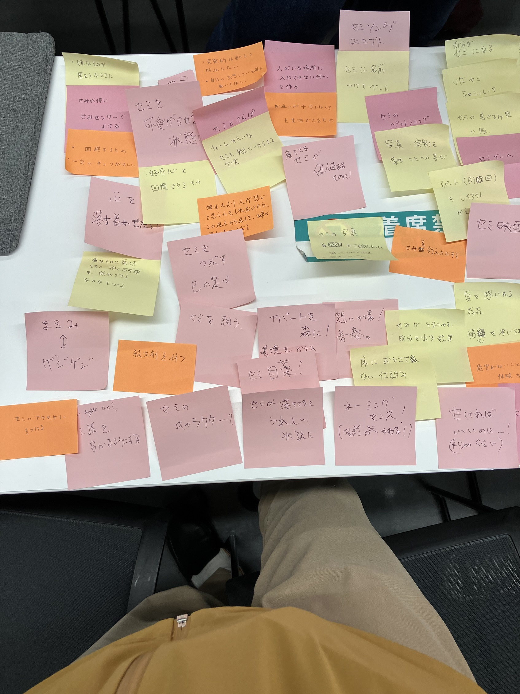
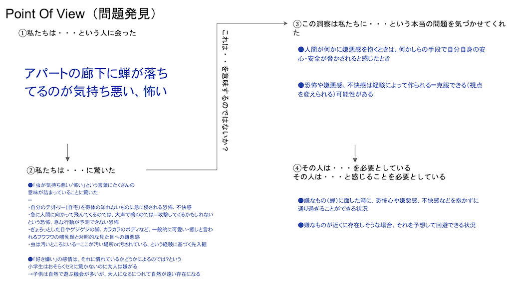
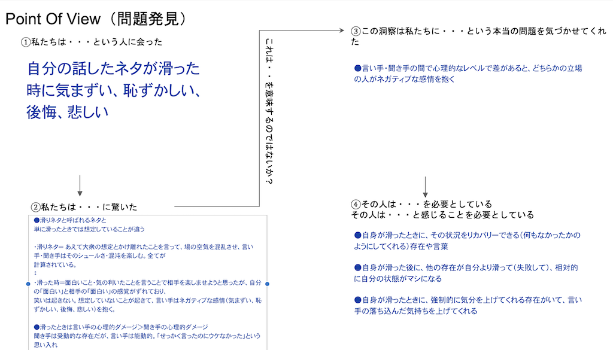
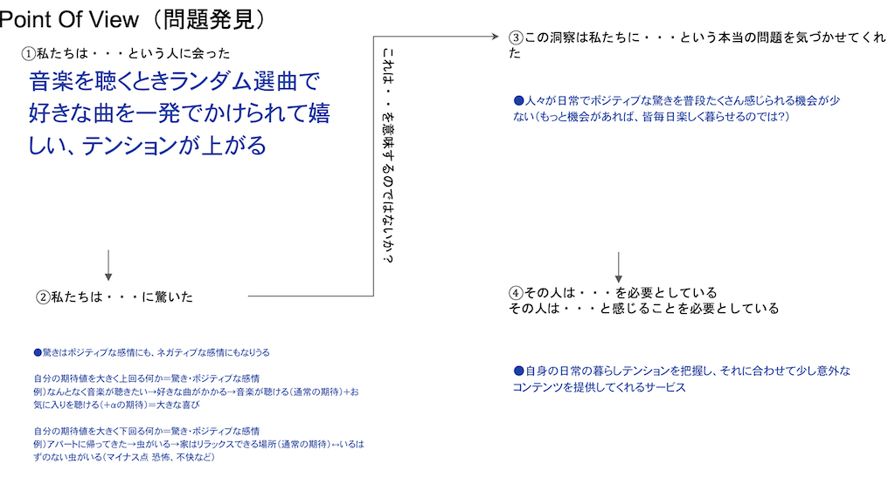

デザイン演習第二回のまとめ
メモ
- 光を操る：使うもの→Neopixel
- 余談：色感情効果→知覚感情と情緒感情の２つ
- 知覚感情は、万人が共通してに感じる感情
赤→「温かい」、青→「冷たい」=寒色・暖色の概念
彩度が高いほど、色から受ける寒暖や興奮・沈静の感情は大きい
感情だけでなく物理的な効果もある（暖色は膨張、寒色は収縮）
- 色の重量は明度による（明度が高いと軽く感じる）
- 情緒感情は、各個人のの体験、記憶、知識などに基づく。色からの印象やそこからの連想、色の好き嫌いなど
年齢を重ねるほど、抽象的な事象と色を関連づけるようになる
※参考サイト：
シーシーエス株式会社 コラム 光と色の話(外部サイト）
Neopixelを光らせる→
授業で試したコードはこちらの杉野さんのHPを参照
グループワーク：正の感情・負の感情 Point of View

マイナスの感情①：アパートの廊下に蝉

マイナスの感情②：ネタが滑る

ポジティブの感情：好きな音楽がかかる

前のページに戻る
デザイン演習Ⅲ・Ⅳトップページ
XBPトップページ